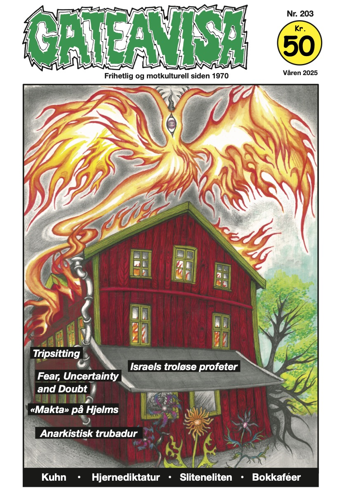
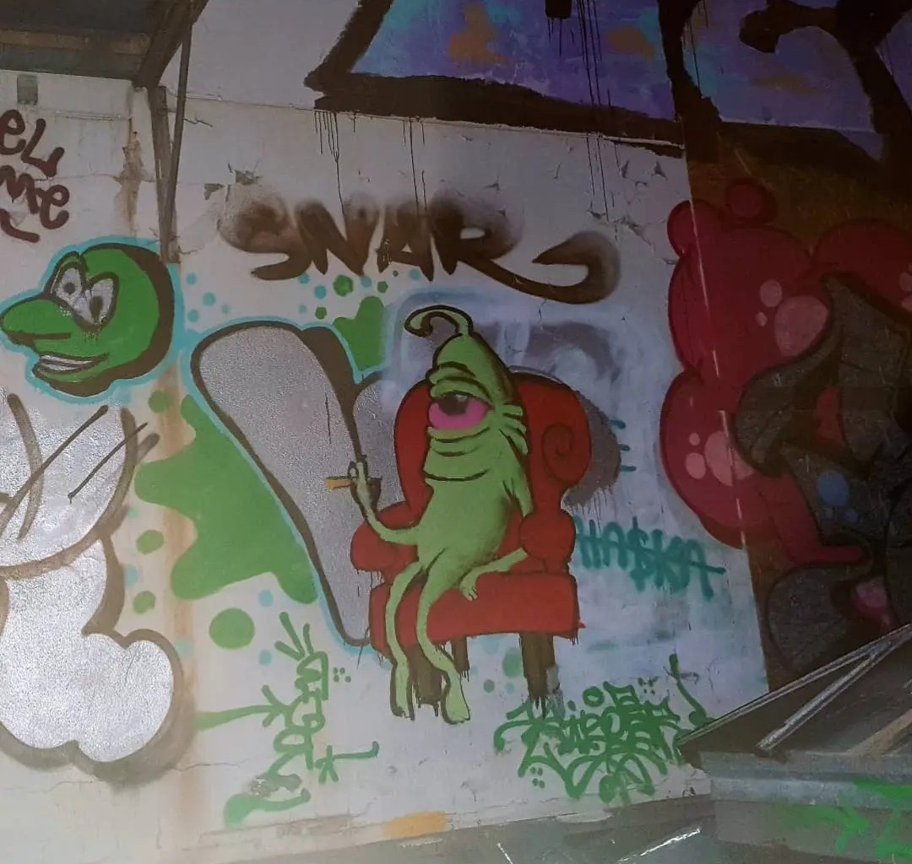
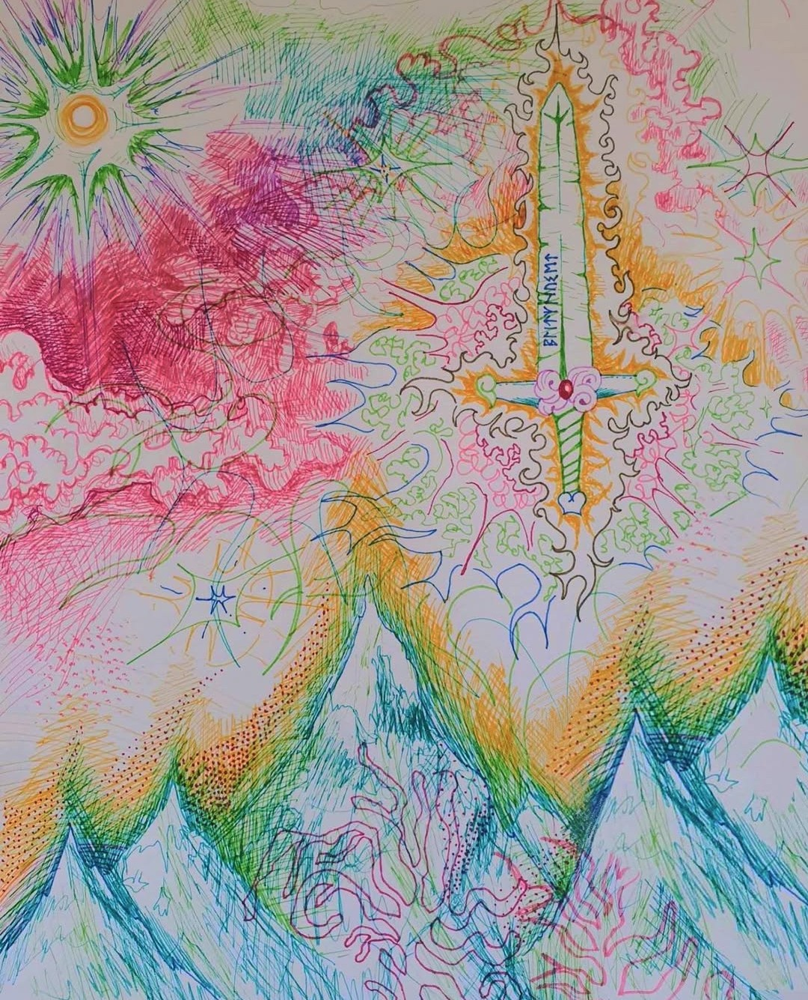
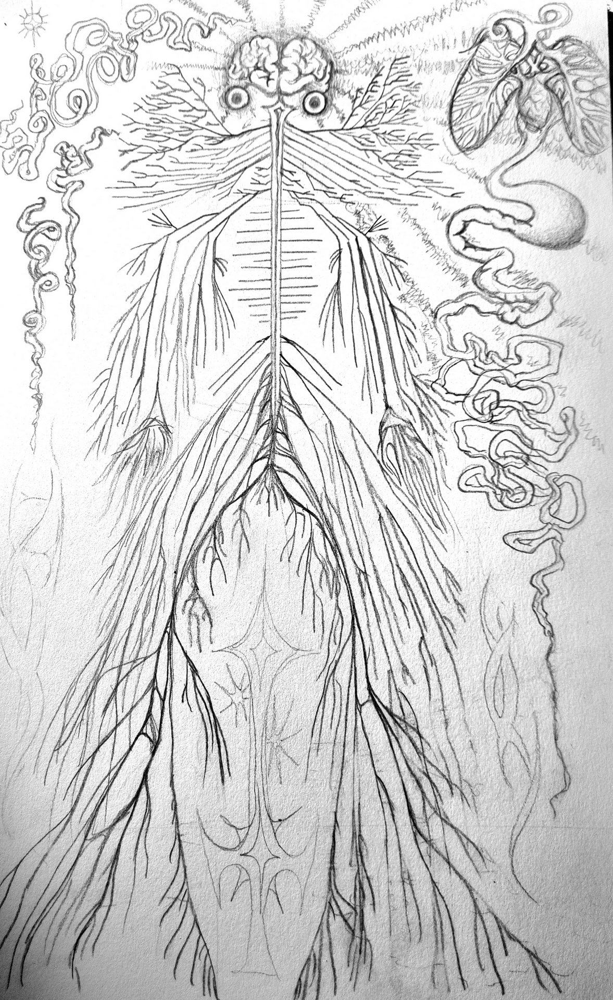
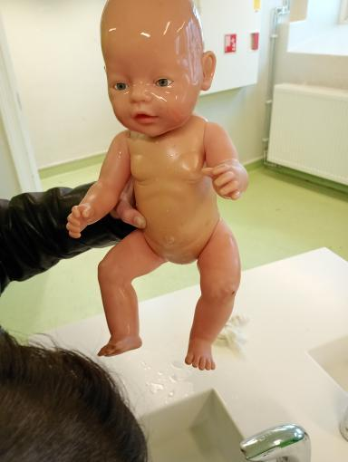
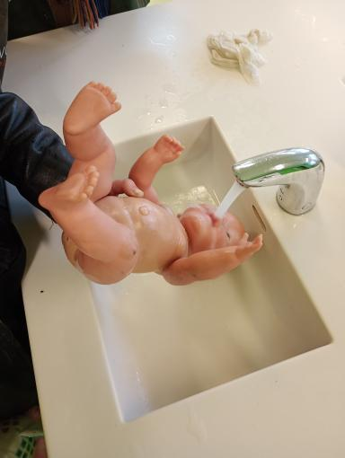
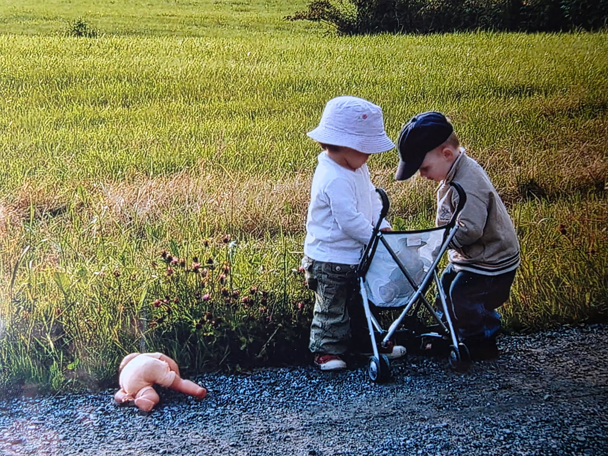
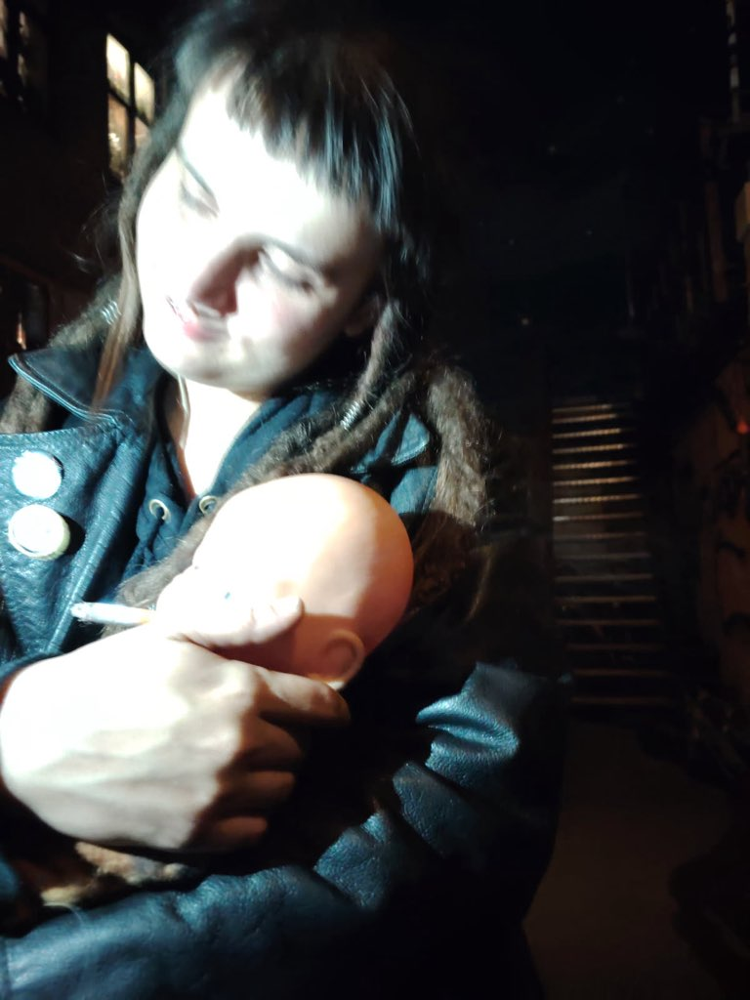
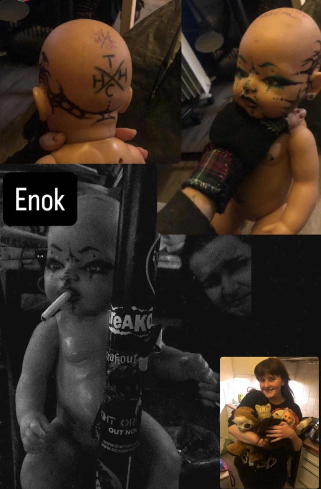
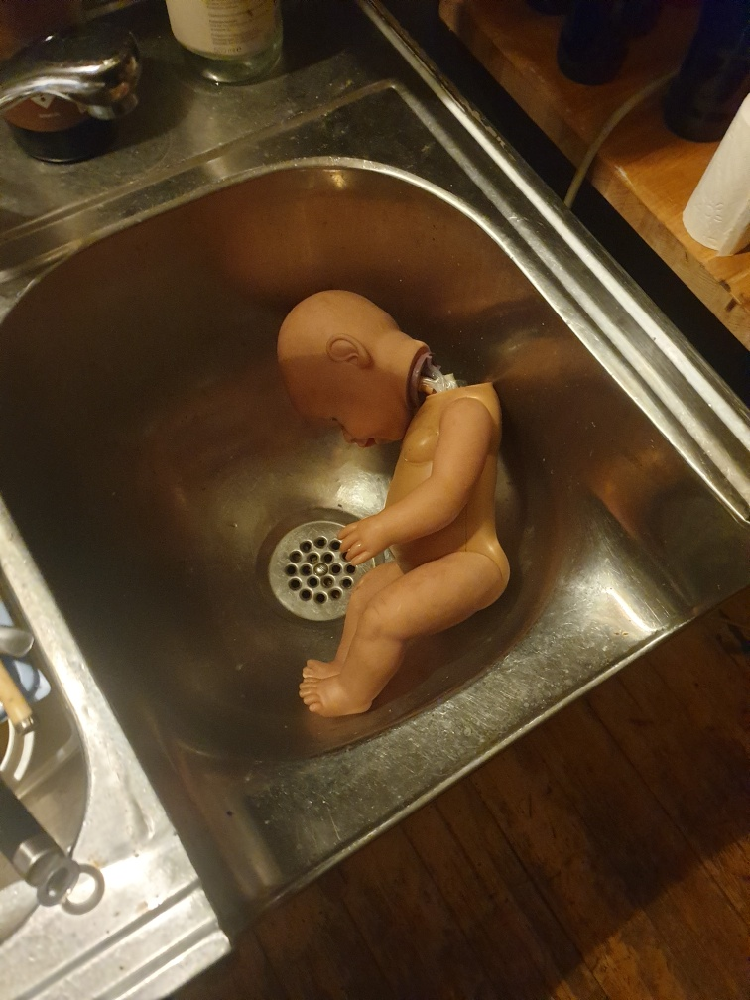

bingo pøbelrock '24
tb til da jeg ramla inn på gateavisa kontoret
"vi trenger et bilde med huset som brenner med en føniks som stikker opp fra flammene" they said
romvesen fyr på kværnerbyen
  døpelsen av Enoch
 han hadde en trøblete barndom, med en ung og mildt sagt emosjonelt fraværende mor, og en far som var, vel, praktisk talt ikke eksisterende. her er den eneste instansen av alle tre i samme bilde...
moren hadde en kjærlighet for sigaretter og brennevin - noe hun syns var ekstremt morsomt, å putte alkohol og sigaretter i munnen på den unge gutten og se han gråte og tisse på seg på tilfeldige tidspunkt.
senere i livet oppdaget han en trøst i punk-rock og sadomasochisme, men dagdrikking og siggrøyking med sin nå gamle mor følget. disse bildene var siste gang noen så enoch før han havnet grundig på kjøret. som du kan se har han fått ansiktstatoveringer og en skuffet mor kan skimtes i bakgrunnen.
kroppen hans ble oppdaget i en vask på hausmannsgate 40 med knukket nakke... politiet har henlagt saken, "det er bare en dukke" sier de, men de vet jo ingenting. gjerningsmannen er enda ute og gjør faenskap i trøndelag. noe sier meg at det er kjerringa nederst i høyre hjørne i forrige bilde men politiet hører ikke på meg.
#justiceformarximillian